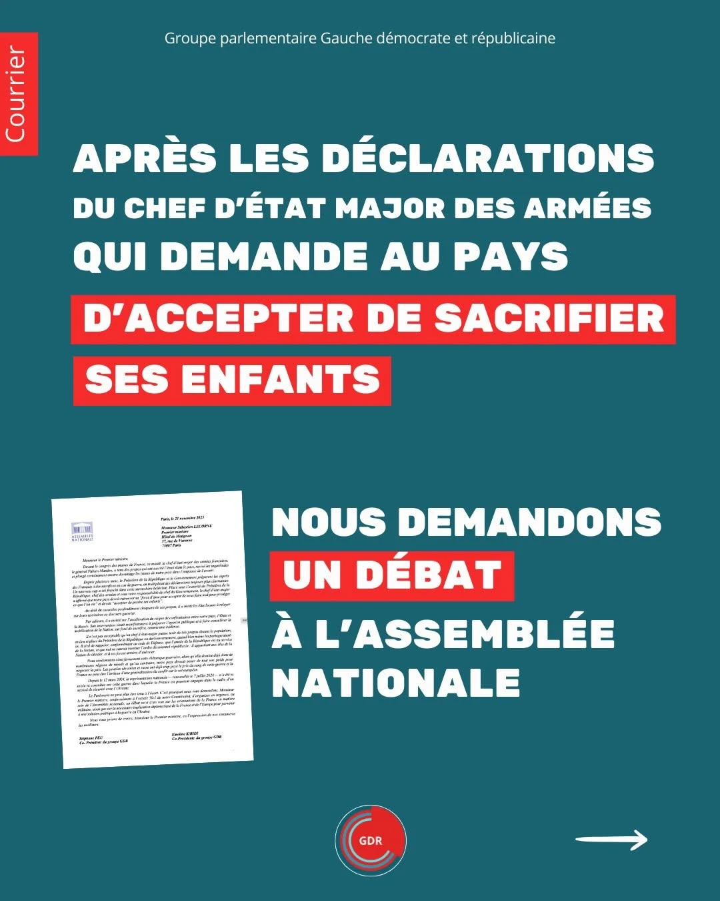
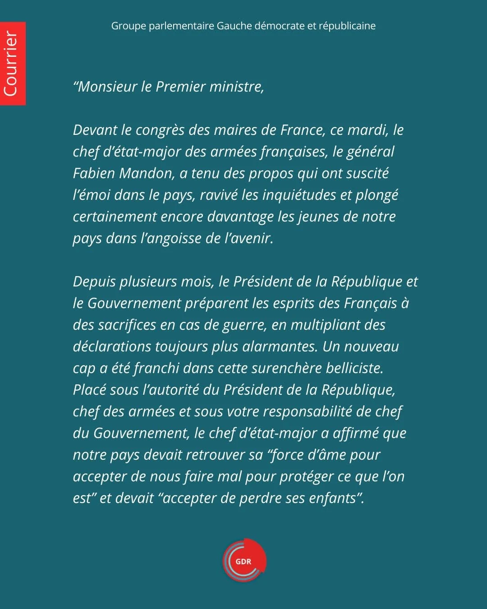
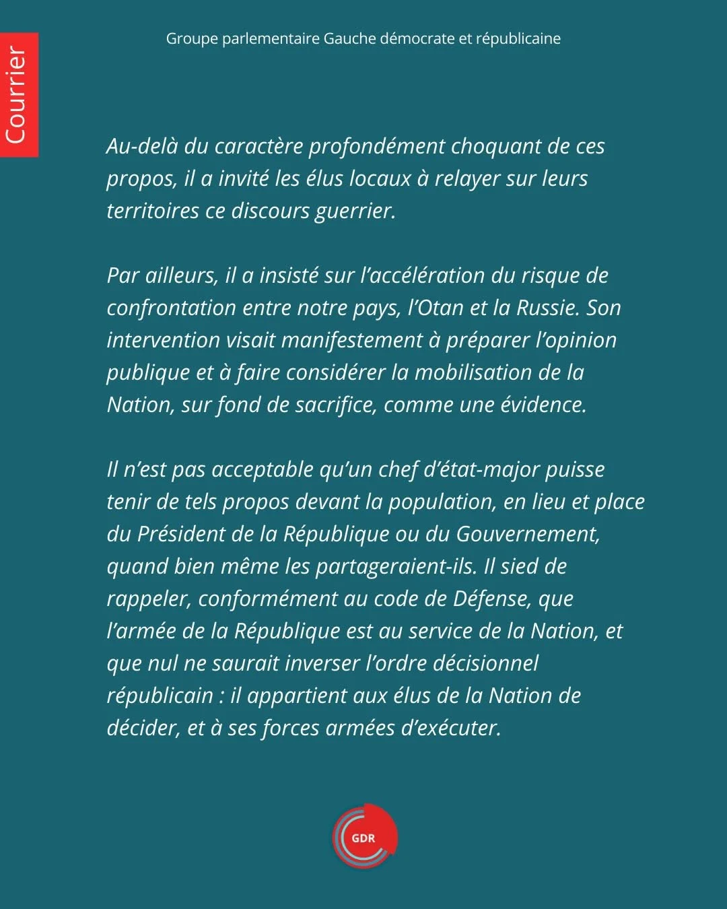
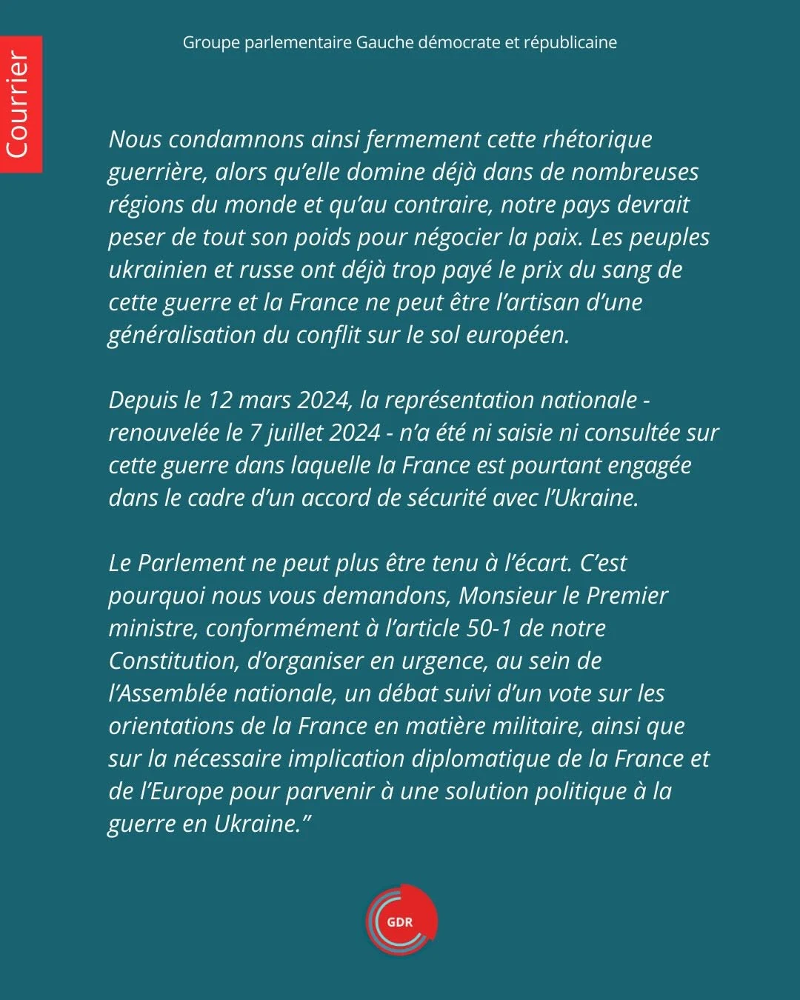

Publication relayée par le PCF 79
Stéphane Peu et Emeline K/Bidi demandent un débat après les propos du chef d’état-major
Date de mise à jour indiquée par Facebook · 21 novembre 2025
Texte de la publication · Les députés communistes
Après les déclarations choquantes du chef d’état major des armées au Congrès des maires de France, Stéphane Peu et Emeline K/Bidi s’adressent à Sébastien Lecornu pour obtenir un débat à l’Assemblée nationale.




Sources
Les députés communistes · publication relayée par le PCF 79 · bibliothèque Facebook · AR-0002-FB-00950
À lire aussi · Face au budget d’austérité, le PCF propose un pacte d’avenir